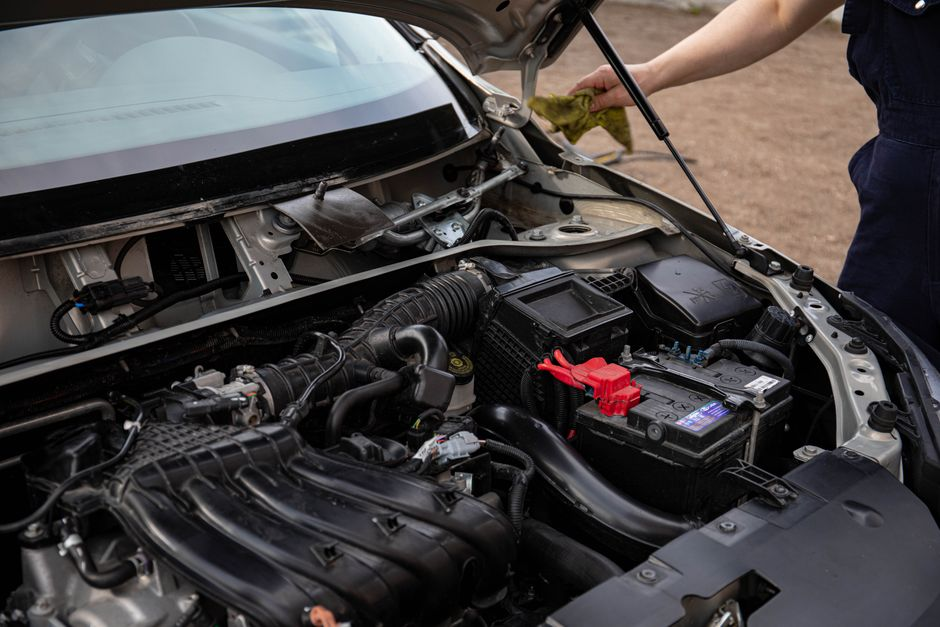

Clear Skies, Clearer Windshields.
FloydCloud connects you with elite auto glass and windshield replacement professionals. Drive with absolute clarity and uncompromising safety.
About FloydCloud
FloydCloud is an independent promotional partner dedicated to bringing drivers the highest standard of auto glass solutions. We recognize that a damaged windshield is more than just a visual annoyance—it is a critical safety hazard that compromises your vehicle's structural integrity.
By showcasing top-tier local auto glass and windshield replacement services, we ensure that you find the prompt, professional care you need. From precise windshield repair to complete car window replacement, our platform highlights experts who prioritize your clarity, safety, and peace of mind on the road.
Explore our featured services

Comprehensive Auto Glass Services
Discover the specialized repair and replacement solutions offered by the trusted professionals we promote.
Windshield Replacement
When damage is too extensive for a simple fix, full windshield replacement restores your vehicle's safety. The technicians utilize premium glass and advanced adhesives to ensure a perfect, factory-grade seal every time.

Chip & Windshield Repair
Stop small cracks from spreading. Professional chip repair is a fast, cost-effective service that injects high-quality resin into the damaged area, restoring visibility and preventing the need for a total replacement.

Car Window Replacement
Shattered side or rear windows leave your vehicle exposed to the elements and theft. Rapid car window replacement services ensure your vehicle is swiftly secured with durable, perfectly fitted replacement glass.
Driver Testimonials
Hear from drivers who have experienced top-tier auto glass care through our recommended providers.
"A rock hit my windshield on the highway, leaving a nasty spiderweb crack. The windshield replacement service I found through FloydCloud was exceptionally fast and communicative. The new glass looks straight from the factory."
— Michael T. (2026)
"I thought I needed a whole new windshield, but the technician performed a flawless chip repair in under thirty minutes. It saved me a lot of money and hassle. Highly recommend their network!"
— Sarah L. (2026)
"My passenger side window was smashed during a break-in. The car window replacement process was smooth and stress-free. They cleaned up all the broken glass and had me securely back on the road the same day."
— David K. (2026)
Frequently Asked Questions
How do I know if I need a windshield repair or a full replacement?
Generally, if a chip or crack is smaller than a quarter and is not in the driver's direct line of sight, a simple chip repair is sufficient. If the crack is larger, spreading quickly, or located near the edges of the glass, a full windshield replacement is required to maintain your vehicle's structural safety.
How long does an auto glass replacement take?
A standard windshield replacement usually takes about 60 to 90 minutes. However, the urethane adhesive requires additional time to cure before the car is safe to drive. Your technician will provide a specific "safe drive time," which is typically an hour after the installation is complete.
Will a chip repair completely hide the damage?
Windshield repair is primarily a structural fix designed to prevent the crack from spreading. While the injection of optical-grade resin significantly improves the cosmetic appearance, a slight blemish or faint outline of the original chip may still be visible upon close inspection.
Do you handle side and rear car window replacements?
Yes, the professionals in our network handle all types of auto glass. Side and rear windows are typically made of tempered glass that completely shatters upon impact, making repair impossible. Full car window replacement is necessary and can usually be completed on the same day.
Can I drive my car immediately after a windshield replacement?
No, driving immediately is not recommended. The adhesive used to secure the new auto glass needs time to set properly to ensure the windshield won't shift or pop out during a collision. Always wait for the technician's green light before getting back on the road.
Request Auto Glass Service
Fill out the form below to connect with professional windshield replacement and repair experts.